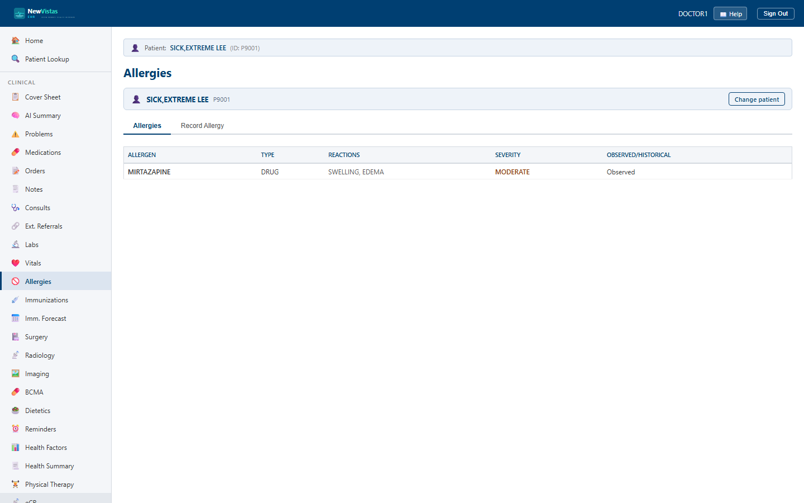

Allergy Documentation
The Allergies screen is where you review a patient's documented allergies and adverse reactions, and record new ones. Allergies drive the safety checks elsewhere in the chart, so keeping them accurate matters. It is the equivalent of the CPRS Allergies tab.
Open Allergies
- In the sidebar, click Allergies (or go to
/allergies). - If a patient is already in context, their allergies load automatically. Otherwise, in the patient bar type the patient ID (e.g.
P9001) and click Load.

What you see
The two tabs
- Allergies — the current list.
- Record Allergy — the form for adding a new entry.
The allergies list
The view tab is a table showing Allergen, Type, Reactions, Severity, and whether the entry is Observed or Historical. Severe reactions are shown in red, moderate in amber. If the patient has none, a green No Known Allergies banner appears instead of a blank table.
Recording an allergy
On the Record Allergy tab, enter the Allergen (required, e.g. Penicillin) and pick the Allergen Type (Drug / Food / Other, required). Then set the Reaction Type, list the Reactions (comma-separated), choose a Severity (Mild / Moderate / Severe), mark it Observed or Historical, confirm the Originator, add any Comments, and click Record Allergy.
Rash, Itching, Swelling — and they're stored as distinct
reactions.